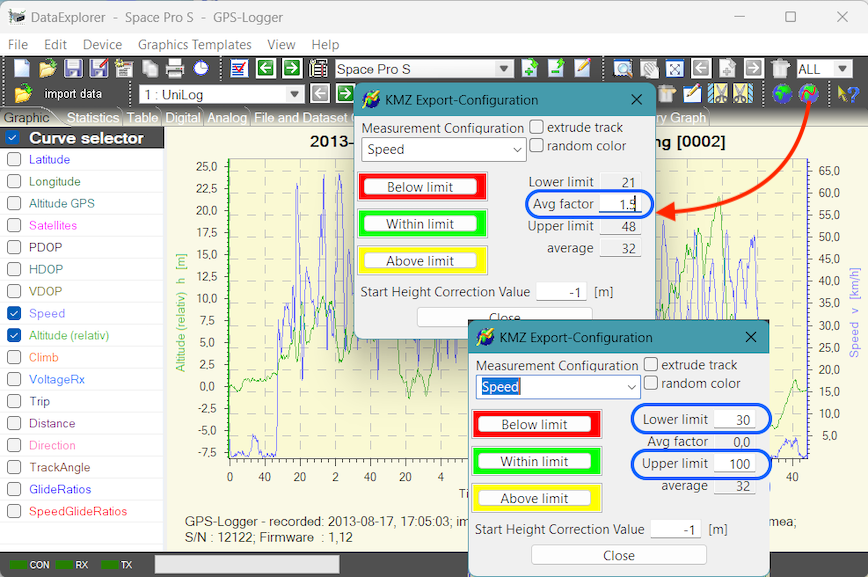

Google Earth
If the current displayed record set contains GPS (global position system) data it is possible to export a KMZ file and launch with such file the Google Earth application. Google Earth needs to be installed. The globe icon will change its visibility to signal launch capability.

Hint : Temporary files gets generated while using the globe button. This temporary files gets located in the temp folder of the system and get deleted while closing this application. If this files should be saved, change into the temporary folder of your operating system or export the same content using the export functionality (Export - KMZ 3D track).
The KMZ export, along with its flight path, can be color-coded in relation to other data. This must be configured before exporting via the KMZ Export dialog. Shown here as an example is the flight recorded using the DataVarioDuo with GPS. The color changes correspond to the predefined speed ranges.

Another example shows elevation changes (climb) highlighted in color in a section of a flight path that has been cropped by zooming.

KMZ Export Configuration
The dialog shown allows you to select the measurement value to be used for color coding and to configure the color ranges. The left side is used to configure the colors for the three possible ranges (Speed the example shown).

The dialog is shown twice to illustrate the differences in how the average factor is configured (blue border). If the average factor is set to 0, the fields for configuring the minimum and maximum values become active and allow for input. If the mean factor is greater than 0, the minimum and maximum values are automatically calculated based on it. The average value is displayed as a guide.
The start altitude correction is used to compensate for errors/tolerances/deviations in the Google Earth terrain model. When the Google Earth terrain model is enabled, it enables that the entire track is visible. When set to -1 m, the start altitude correction value also allows for export using relative elevation to ground level. This setting will produce satisfactory results in most cases. Only on slopes does the flight path tilt relative to the slope and appear distorted. In such cases, it is better to determine the Google Earth terrain elevation of the starting point and adjust it using the correction value. To do this, the terrain model must also be enabled in Google Earth. This results in exports using an absolute altitude, relative to MSL.
Hint: The exported GPS data in form of KMZ files contains data points which gives more info regarding the data point to you while this is switched on. It is possible to display a so called elevation profile using the context menu. Using the time bar on top an motion animation is possible.